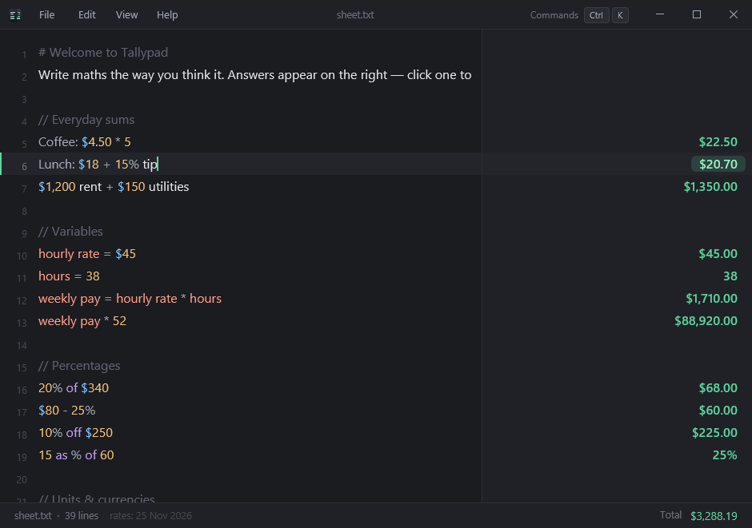
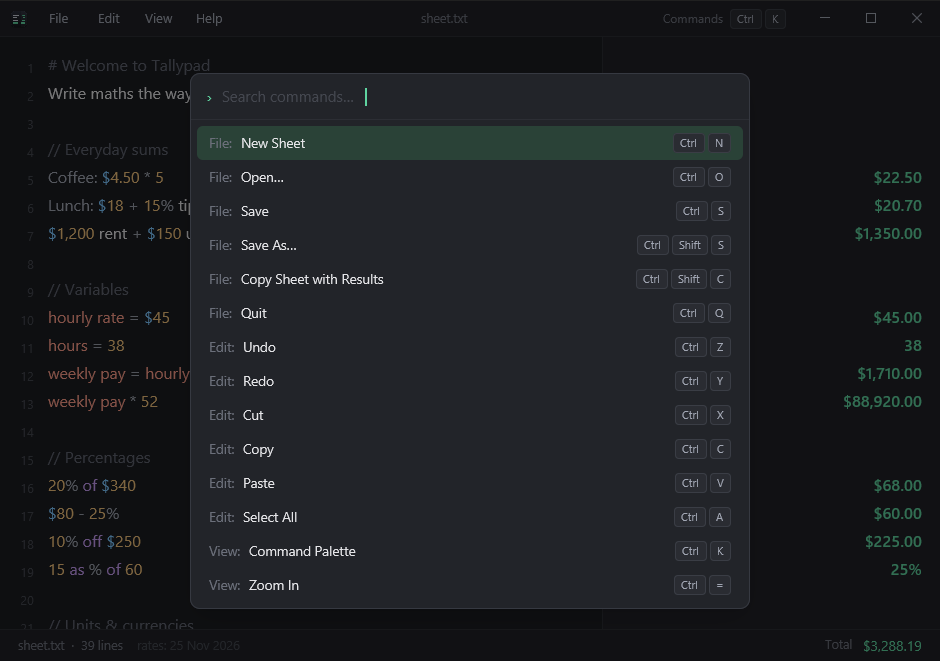
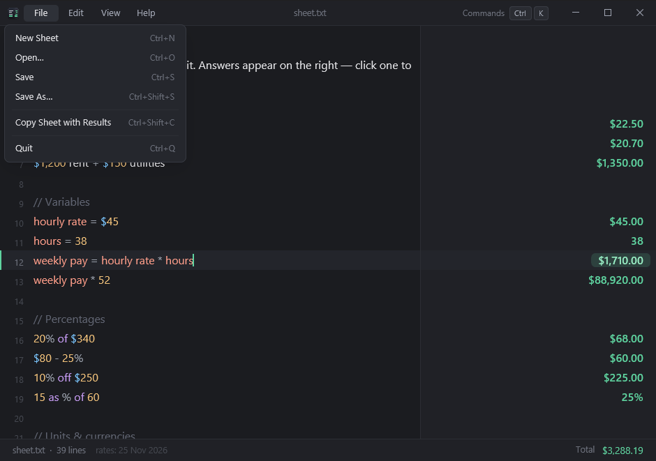

Tallypad is a notepad calculator for Windows. Type plain text on the left and the answer for each line appears on the right as you type. It handles units, currencies, percentages and variables.

Tallypad skips words it doesn't need, so your notes can stay notes. Every line is calculated as you type.
Labels, comments and words in between are ignored.
Names can be several words long. Start typing one and Tallypad suggests it; press Tab to insert it. Change a value and every line that uses it updates.
Work out discounts, tips, mark-ups and ratios.
Length, weight, time, data, temperature, area, volume and speed. Units cancel out properly.
Exchange rates download in the background and are saved for offline use.
sum and average cover the lines above. prev and line 3 refer to earlier answers.
Every command is in the menus and in the CtrlK command palette. The line you're on is highlighted across both columns, so you can always see which answer is yours.


Press F1 in the app to see these at any time.
| Command palette | CtrlK |
| New sheet | CtrlN |
| Open… | CtrlO |
| Save / Save as… | CtrlS CtrlShiftS |
| Copy sheet with results | CtrlShiftC |
| Refresh exchange rates | CtrlR |
| Undo / Redo | CtrlZ CtrlY |
| Zoom in / out / reset | Ctrl= Ctrl- Ctrl0 |
| Keyboard shortcuts | F1 |
| Copy an answer | click it |
| Copy the total | click the footer |
| Quit | CtrlQ |
There's no installer. Tallypad is a single executable that keeps itself up to date.
Download Tallypad.exe and put it somewhere permanent, like a Tools folder.
The first time you run it, Windows SmartScreen may warn about an unrecognised app. Choose More info → Run anyway.
When a new release is out, an Update pill appears in the footer. One click downloads it and restarts the app.
Inspired by Soulver. Soulver is a great notepad calculator for Mac and iPhone. Tallypad is an independent open-source project that brings the same idea to Windows. It isn't affiliated with or endorsed by Soulver's makers. If you're on a Mac, try Soulver.